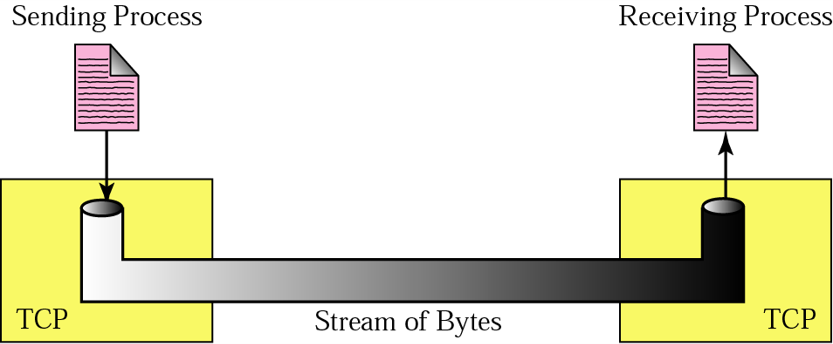

TCP ( Transmission Control Protocol )
TCP operates at the transport layer (Layer 4) and provides a reliable, ordered, and error-checked communication service between applications running on different hosts connected via an IP network
- Like UDP, TCP uses port numbers as transport layer Address.
- If an application can use both UDP and TCP, the same port number is assigned to this application.
- TCP is described as a stream-oriented protocol, it means that it treats the data being sent between two applications as a continuous, ordered sequence of bytes (or octets), rather than as a series of distinct messages or packets.
- TCP creates an environment in which the two processes seem to be connected by an imaginary “tube” that carries their data across the Internet.

- Buffers are needed for storage, because the sending and receiving processes may not produce and consume data at the same speed.
- There are to buffers, one for each direction
- One way to implement a buffer is to use a circular array of 1-Byte locations, as shown
- Normally the buffers are hundreds or thousands of Bytes, depending on the implementation.

- At sending side, the buffer has three types of locations:
- The white section contains empty locations that can be filled by the sending process (producer).
- The grey area holds Bytes that have been sent but not yet acknowledged. (TCP keeps the Bytes in the buffer until it receives an acknowledgement).
- The colored area are Bytes to be send by sending TCP.
- However, TCP may be able to send only part of this colored section, due to the slowness of the receiving process or congestion in the network.
- The circular shape is due to the fact that after Bytes in the grey locations are acknowledged, the location is recycled and available for use by sending process.
- The operation of the buffer at the receiver site is simpler.
- The circular buffer is divided into two areas (white and colored).
- The white area contains empty locations to be filled by Bytes received from the network.
- The colored sections contain received Bytes that can be consumed by receiving process.
- When a Byte is consumed by the receiving process, the location is recycled and added to the pool of empty locations.